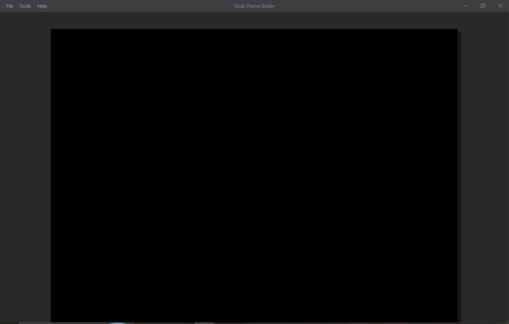
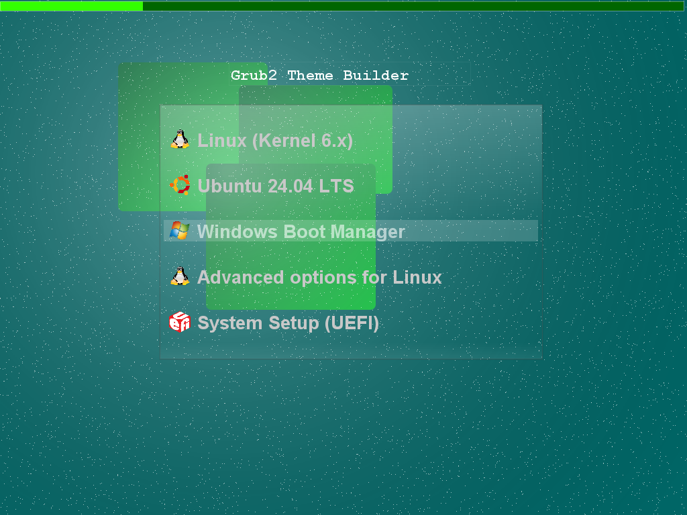
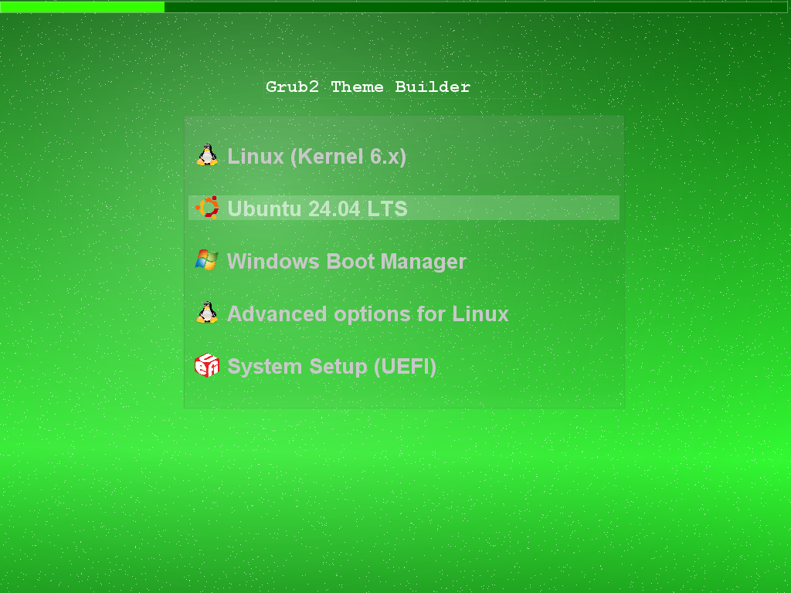

Visual GRUB 2
Theme Design Studio
GRUB Theme Builder is a free visual editor and builder for creating, customizing, importing, previewing and exporting GRUB 2 bootloader themes on Windows and Linux.
What is GRUB Theme Builder?
GRUB Theme Builder is a graphical GRUB 2 theme design studio and builder designed to make GRUB theme creation more visual and accessible.
Instead of manually editing theme.txt files and calculating
positions for every element, you can design supported GRUB 2
theme components directly on a visual canvas.
Version 1.1 expands this workflow with dedicated Background Studio and Boot Menu Studio, integrated font conversion, visual effects, progress indicators and expanded graphical controls.
See it in action
Design and customize your GRUB theme visually.




A Visual GRUB 2 Design Studio
Design backgrounds, menus, fonts and graphical elements in one visual workflow.
Visual Design Canvas
Design supported GRUB 2 elements directly on a graphical canvas with positioning, sizing and zoom.
Background Studio
Create custom backgrounds with gradients, colors, shapes, waves, lines, arrows, decorations and transparency.
Boot Menu Studio
Design the boot menu with shadow, light, glow, transparency, glass effects, borders, rounded corners and custom text.
Font Management
Select TTF or OTF fonts and convert them to GRUB PF2 automatically during the export workflow.
Progress Bars
Add progress bars and customize their visual appearance and colors directly from the editor.
Circular Progress
Create circular progress indicators with customizable colors, size, position and appearance.
Visual Effects
Use transparency, shadows, glow, light, glass-style effects, borders, rounded corners and custom colors.
Import & Export
Import supported GRUB themes, continue editing visually, and export the finished theme with its resources.
Project Files
Save complete projects using the GRUB Theme Builder project format and continue editing later.
Canvas Zoom
Zoom the design canvas for detailed positioning and editing.
Three Background Modes
Choose Simple Color, Background Studio, or load an external image as the theme background.
Windows & Linux
Windows uses bundled GRUB font tools, while Linux uses the system-installed grub-mkfont.
Background Studio
Build the visual foundation of your GRUB theme directly inside the application.
Three ways to create your background
Simple Color — use a single custom background color.
Background Studio — create a graphical composition with gradients, shapes, waves, lines, arrows, decorations, custom colors and transparency.
External Image — load an existing image and use it as the GRUB background.
Background Studio can combine multiple visual elements to create anything from simple gradients to more elaborate graphical compositions.
What changed in v1.1?
GRUB Theme Builder grows from a visual editor into a broader GRUB theme design studio.
Design the complete visual experience
Version 1.1 introduces dedicated design environments for the background and boot menu, alongside integrated font management and expanded visual effects.
Fonts can be selected from TTF or OTF files and converted to the GRUB PF2 format automatically. Windows uses the bundled GRUB font tools, while Linux uses the system-installed grub-mkfont command.
Progress bars and circular progress indicators support custom colors, while images, labels, boxes, transparency, borders and other supported elements can be combined on the visual canvas.
The current export workflow is designed to preserve the visual design closely; current testing reports approximately 90% visual fidelity between the canvas design and the exported GRUB theme, depending on the components used.
Download GRUB Theme Builder
Get the latest release and start creating your GRUB theme.
GRUB Theme Builder for Windows
Create GRUB 2 themes with the full visual design workflow and bundled Windows font tools.
Download for WindowsGRUB Theme Builder for Linux
Linux package for compatible systems. Font conversion uses the system-installed grub-mkfont command.
Visit GitHub Releases for the latest downloads, release information and future versions.
Roadmap
Planned improvements for future versions.
Further improvements to GRUB theme preview and rendering.
Expanded support for additional GRUB theme components and properties.
Improved compatibility when importing more existing GRUB themes.
Additional visual tools and design controls.
GRUB Theme Builder
Explore the project, download the latest version, or follow development on GitHub.
Design your GRUB theme visually.
Create, customize and export GRUB 2 themes with dedicated studios for backgrounds and boot menus.